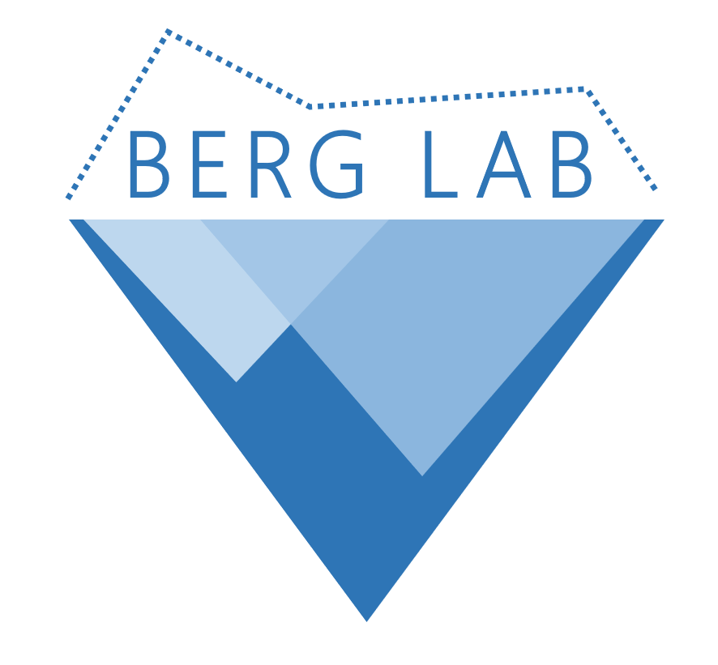

Aashi Jain

Lhakhang in Paro, Bhutan
I am an AI resident at Google Research with the NLU team. Prior to residency, I was at UC San Diego where I completed my Masters in CS. I was also a member of BergLab, advised by Taylor Berg-Kirkpatrick. During grad school, my research focused on controlled generation and representation learning.
My research interests are broadly in Natural Language Processing, with a special focus on unsupervised learning, controlled generation, and learning semantic representations.
Outside research I like to teach myself new languages (check out my  Duolingo). I also enjoy running, playing tennis, meditating, reading biographies.
Duolingo). I also enjoy running, playing tennis, meditating, reading biographies.
news
| Aug 2020 |
Started AI Residency at Google! |
|---|---|
| Jul 2020 | Attending ACL ‘20. Sadly everything goes virtual hereafter. |
| Apr 2019 | Joined BergLab  |